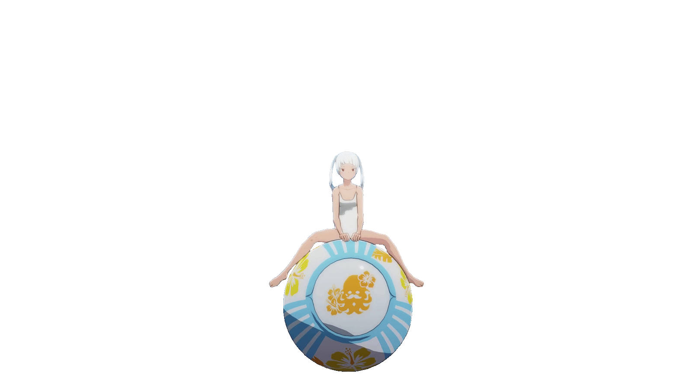

プログラミング ～その３～
今回は、プログラミング２で作ったゲームに、少し、飾りをつけてみる。
ビットマップを使う
ビットマップを使って、木と車を表現してみよう。
速度的にペナルティが大きいが、前回のプログラムの構造をできるだけ変えずに変更してみた。
【サンプルプログラム】
100 '==================== ドライブゲーム =========================
110 SCREEN_WIDTH=128:SCREEN_HIGHT=64:'画面の幅と高さ
120 FONT_WIDTH=6:FONT_HIGHT=8:'フォントの幅と高さ
130 CX_MAX=SCREEN_WIDTH/FONT_WIDTH:CY_MAX=SCREEN_HIGHT/FONT_HIGHT:'列と行の最大値
140 SCORE_X=SCREEN_WIDTH-5*FONT_WIDTH:SCORE_Y=0:'スコア表示位置
150 COURSE_WIDTH=CX_MAX-5:'コースの幅
160 TREE_MAX=4:'1行に表示する木の本数の最大値
200 dim course[CY_MAX]:'コース
210 for i=0 to CY_MAX-1:course[i]=" ":next:'コースをスペース(16文字)で埋める
220 carX=8:CAR_Y=7:'車の表示位置
230 gameOver=0:'ゲームオーバーでない時:0 ゲームオーバーになったら1
300 score=0
350 gosub 5000:'ビットマップを定義
400 cls
410 putStr SCORE_X,SCORE_Y,"SCORE",1
500 '==================== メインループ =========================
510 while -1
520 gosub 1000:'コース・スコア表示
525 if gameOver=1 then exit while
530 gosub 2000:'車の移動と表示
540 gosub 3000:'コースのスクロール
550 gosub 4000:'衝突判定
680 sleep 100:'100ms待つ
700 end while
710 '----- ゲームオーバーを表示 ---------
720 GAME_OVER_STR="Game Over"
730 gaveOverX=(COURSE_WIDTH-strlen(GAME_OVER_STR))/2
740 putStr gaveOverX*FONT_WIDTH,SCREEN_HIGHT/2-FONT_HIGHT/2,GAME_OVER_STR,1
900 end
1000 '==================== コース・スコア表示 ====================
1010 for i=0 to CY_MAX-1:'コースの行数分ループする
1013 'コース１行分を表示する
1015 fill 0,i*FONT_HIGHT,SCORE_X-1,i*FONT_HIGHT+FONT_HIGHT-1,0
1020 for j=0 to COURSE_WIDTH-1
1022 if mid(course[i],j,j+1)="@" then put j*FONT_WIDTH,i*FONT_HIGHT,treeBM
1025 next
1030 next
1040 putStr SCORE_X,SCORE_Y+FONT_HIGHT,format("%05D",score),1:'スコアを表示する
1050 return
2000 '==================== 車の移動と表示 =======================
2010 '車を移動する
2020 if keyL()=1 then carX=carX-1:if carX<0 then carX=0
2030 if keyR()=1 then carX=carX+1:if carX>=COURSE_WIDTH then carX=COURSE_WIDTH-1
2040 put carX*FONT_WIDTH,CAR_Y*FONT_HIGHT,carBM:'車を表示する
2050 return
3000 '==================== コースのスクロール ===================
3010 '今のコースを１行下にずらす
3020 for y=CY_MAX-1 to 1 step -1:course[y]=course[y-1]:next
3030 '一番上の行を作る
3040 temp=" "
3050 for i=1 to TREE_MAX
3060 r=(rand()*COURSE_WIDTH*4)/255:'４分の１の確率で16より小さい数字になる
3070 if r<COURSE_WIDTH then
3080 temp=mid(temp,0,r)+"@"+mid(temp,r+1,COURSE_WIDTH)
3090 end if
3100 next
3110 course[0]=temp
3120 return
4000 '==================== 衝突判定 ===========================
4010 '車の位置に木があるかを調べる
4020 if mid(course[CAR_Y],carX,carX+1)="@" then gameOver=1 else score=score+10
4030 return
5000 '==================== ビットマップ定義 ====================
5010 treeBM=createFM(FONT_WIDTH,FONT_HIGHT)
5020 setBM treeBM, 0,"001100"
5030 setBM treeBM, 1,"011110"
5040 setBM treeBM, 2,"011110"
5050 setBM treeBM, 3,"111111"
5060 setBM treeBM, 4,"111111"
5070 setBM treeBM, 5,"001100"
5080 setBM treeBM, 6,"001100"
5090 setBM treeBM, 7,"001100"
5110 carBM=createFM(FONT_WIDTH,FONT_HIGHT)
5120 setBM carBM, 0,"011110"
5130 setBM carBM, 1,"011110"
5140 setBM carBM, 2,"110011"
5150 setBM carBM, 3,"100001"
5160 setBM carBM, 4,"111111"
5170 setBM carBM, 5,"111111"
5180 setBM carBM, 6,"111111"
5190 setBM carBM, 7,"011110"
5400 return
